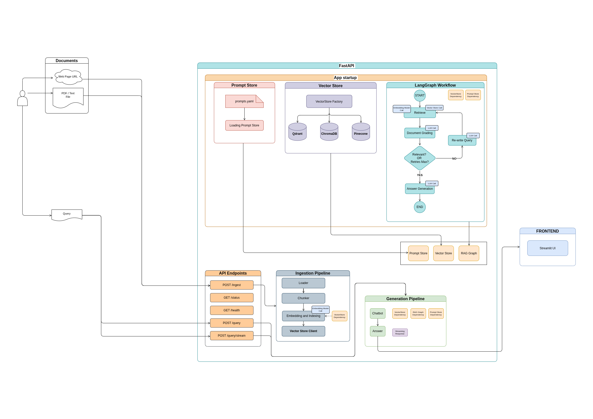
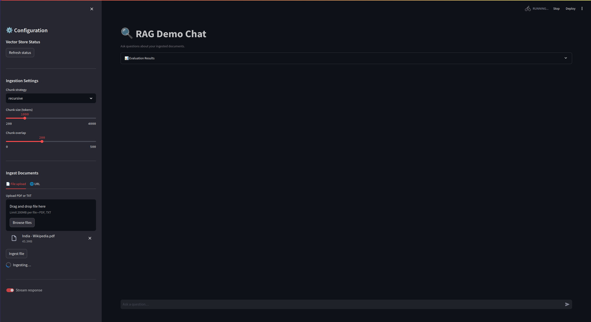
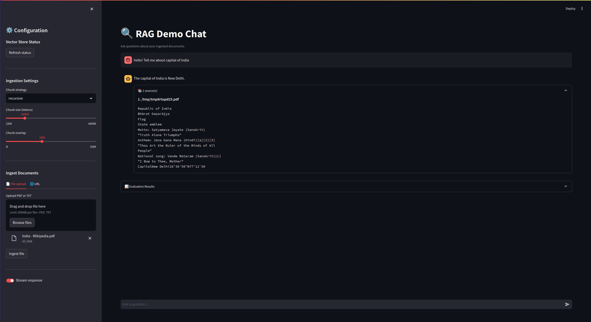
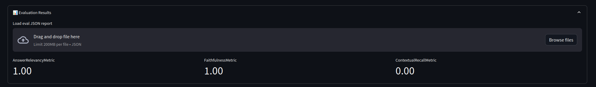

A battle-tested starter kit — FastAPI, LangGraph, and a pluggable vector store — so you spend zero time on boilerplate and all of it on your product.
A clean, opinionated pipeline from raw PDF to grounded answer — with evaluation baked in from day one.

Ingest documents, generate grounded answers, and measure quality — out of the box.
Upload any PDF. The pipeline chunks, embeds, and indexes it into the vector store automatically.

LangGraph retrieves the most relevant chunks and synthesises a cited, grounded answer.

Built-in RAG evaluation scores faithfulness, relevance, and context recall on every run.

Clone, configure your API key, and let Docker handle the rest. The full UI opens at localhost:8501.
# 1. Clone and configure cp .env.example .env # Set OPENAI_API_KEY in .env # 2. Start everything docker compose up --build # 3. Open the UI open http://localhost:8501